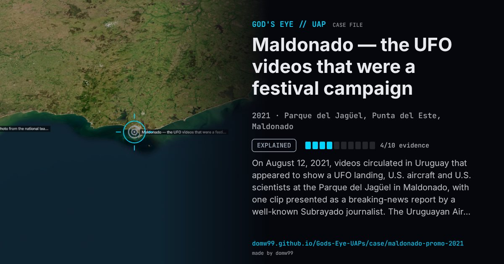

Maldonado — the UFO videos that were a festival campaign

On August 12, 2021, videos circulated in Uruguay that appeared to show a UFO landing, U.S. aircraft and U.S. scientists at the Parque del Jagüel in Maldonado, with one clip presented as a breaking-news report by a well-known Subrayado journalist. The Uruguayan Air Force’s commission for UFO reports, CRIDOVNI, examined the material and announced the next day that, having investigated the evidence and analysed the possible events, they “are not real”. The clips turned out to be part of a promotional campaign for the America Rockstars music festival.
Explanation
The Uruguayan Air Force’s CRIDOVNI investigated and said the events “are not real”: the videos were part of a promotional campaign for the America Rockstars festival, including a staged television news flash.
What was seen
Shape: Not described; staged footage
Witnesses: None independent; the footage was produced for an advertising campaign
Duration: Not applicable